01
Adaptive Probe-Holding Mechanisms for a Teleoperated Ultrasound Robot
Host: Indian Institute of Technology Guwahati
Supervisor: Dr. Santosha Kumar Dwivedy, Dept. of Mechanical Engineering
Duration: May – July 2025
Tools: SolidWorks, SolidWorks Simulation (FEA)
Robotic ultrasound systems can extend expert diagnostic reach into regions with no resident sonographer — but every existing platform is built around a single, fixed probe geometry. This project designed and evaluated three original gripper mechanisms intended to hold any common ultrasound probe — linear, curvilinear, phased-array, or pencil — securely, compliantly, and without manual reconfiguration.
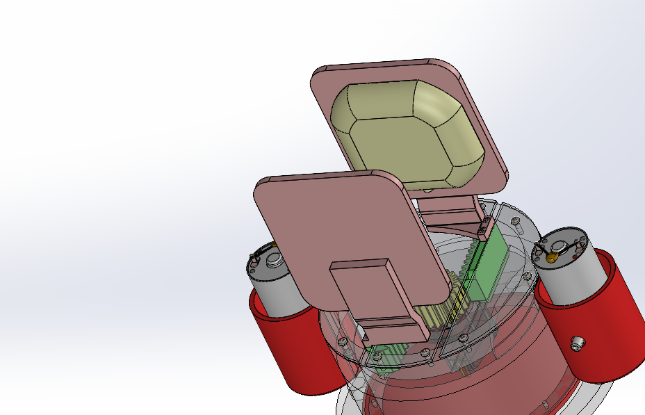
Fig. 1 — Design 1, jaws open. Rack-and-pinion actuated, granular-jamming contact pads visible on the inner plate faces.
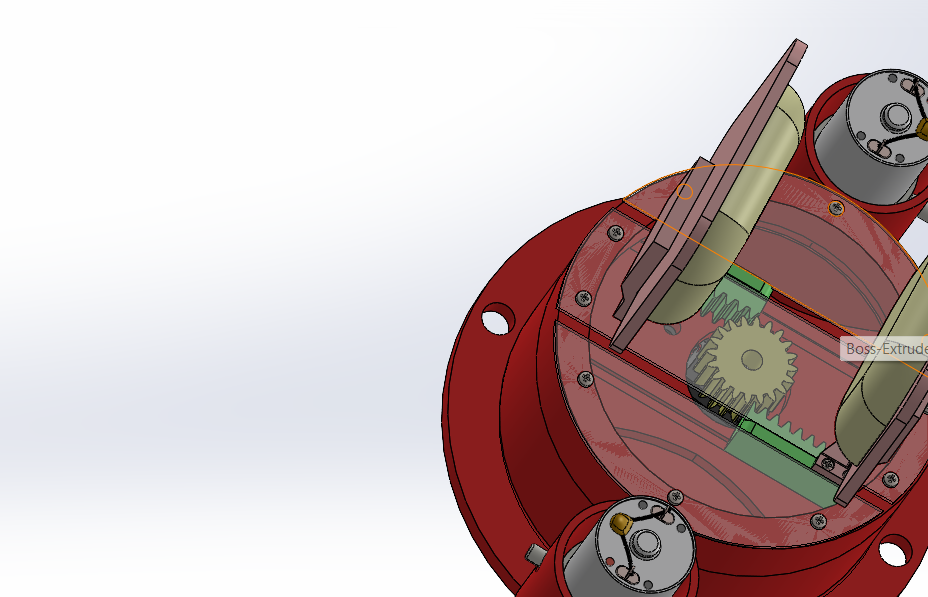
Fig. 2 — Design 1, viewed from the drive side. Twin DC motors drive the central pinion gear.
The design problem
Ultrasound probes are not standardized: a linear array probe and a phased-array cardiac probe can differ in footprint by a factor of two, and pencil probes for Doppler work are a different geometric class entirely. A gripper built for one probe type fails on the next — which is precisely why most existing robotic ultrasound platforms (ARTIS, TER, the Abolmaesumi parallelogram-linkage system) are deployed with form-fitting, probe-specific holders rather than general-purpose grippers. The open problem was: can a single mechanism grip across this entire geometric range, while staying compliant enough not to damage the probe or the patient?
I addressed this by developing three independent design concepts, each trading off adaptability, mechanical simplicity, and contact conformity differently — then evaluating their structural response under a representative clinical loading condition.
Design 1
Rack-and-pinion gripper with granular jamming contact
Two steel plates, each on a 30 mm-stroke linear rack, are driven symmetrically inward or outward by a shared pinion gear — giving a clamping range of up to 60 mm. Each plate face carries a sealed elastomeric pouch filled with granular medium. In its unjammed state the pouch drapes over the probe's contours; on application of vacuum, the granules lock rigid, capturing a custom-conformed grip with no probe-specific tooling.
Stroke: 30 mm/rack
Max separation: 60 mm
Actuation: servo/stepper-driven pinion
Vacuum source: ~70 kPa diaphragm micro-pump
Design 2
Ball-screw plate clamp with lateral conformal linkage
A fixed plate and a ball-screw-actuated movable plate form the primary clamp (M14×2.0 thread, 70 mm travel) — chosen for high positional accuracy and minimal backlash over the rack-and-pinion approach. A second, independent mechanism then closes in laterally: a servo-driven circular link rotates to pull two side plates inward through curved guide slots, providing anti-rotation support for round or tapered probes. Spring-loaded 10 mm extensions on the side plates let the same mechanism passively adapt to both slim pencil probes and broader curvilinear ones.
Screw: 10 mm bore, M14×2.0
Travel: 70 mm
Side-plate gearing: 1:1, spatially offset
Contact surface: soft gel pad lining
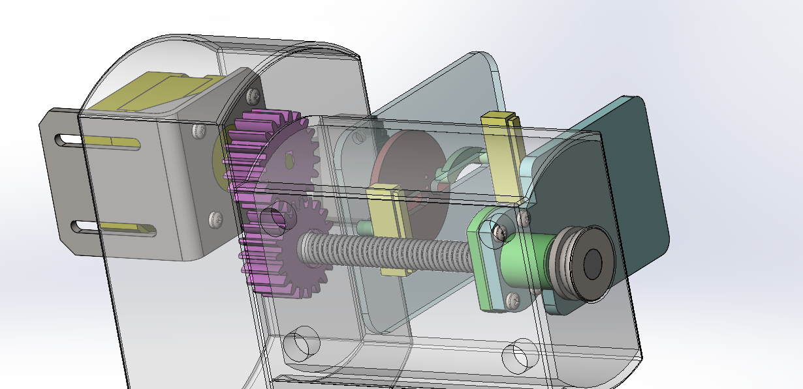
Fig. 3 — Cutaway of the ball-screw drive train: motor-to-screw gear pair (1:1) shown in transparency.
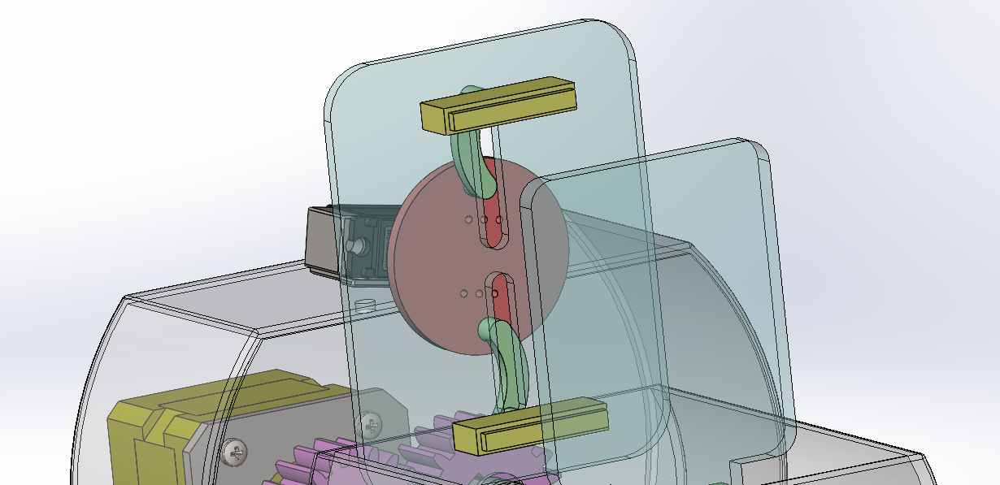
Fig. 4 — Secondary side-gripping linkage. The central disc rotates to translate two curved links, drawing side plates inward for anti-rotation support.
Design 3
Pneumatic pin-array gripper with independent compliant contact
A derivative of Design 1's rack-and-pinion actuation, with the granular jamming pads replaced by a 12-cylinder pneumatic pin array on each plate (8 mm bore, 25 mm stroke). Each rubber-tipped piston extends independently until it contacts the probe surface, then holds its equilibrium position under backpressure — so the array as a whole settles into a unique, conformal cavity around whatever geometry it meets, similar in principle to a pin-art toy but with controlled, individually-addressable force. Increasing the rack length to 50 mm (from 30 mm in Design 1) gave the working envelope needed to fit the pneumatic hardware internally while still reaching a 100 mm maximum plate separation.
Pin array: 12 cylinders/plate
Cylinder bore/stroke: 8 mm / 25 mm
Max plate separation: 100 mm
Control: solenoid-valved, individually addressable
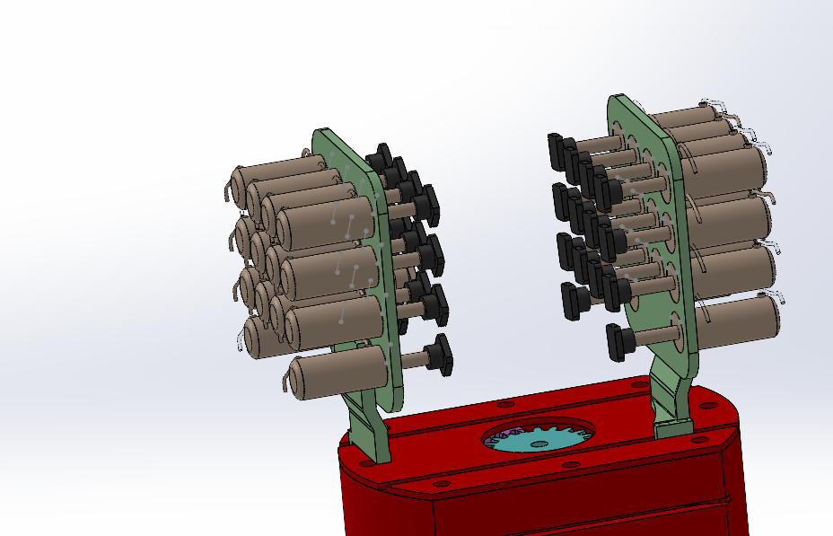
Fig. 5 — Design 3 full assembly — two 12-pin arrays mounted on the rack-and-pinion base.
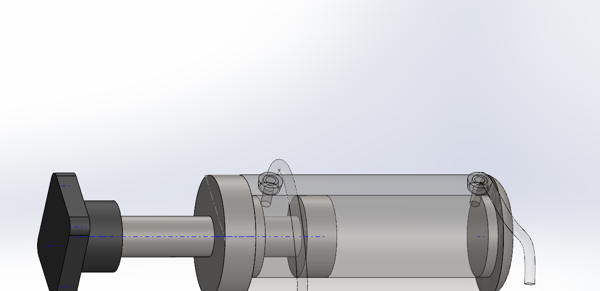
Fig. 6 — Single double-acting pneumatic cylinder, modeled for reference, showing piston travel and tubing ports.
Structural validation
To check whether the gripper structures could resist slippage under realistic loading, I ran a preliminary static finite-element analysis in SolidWorks Simulation. A simplified probe geometry — sized to match convex and phased-array dimensions — was placed in bonded contact with the gripping interfaces, with the gripper base fixed to represent attachment to a robotic arm. An 8 N downward force, representing typical clinical scanning contact pressure, was applied to the probe's underside, and reaction forces and deformation were probed across the contact and support regions.
This was an initial validation pass rather than a finished one — the report is explicit that further force-transmission and deformation analysis is needed before any design could move to prototyping. I see that as the honest state of the work: three structurally distinct, individually reasoned design concepts, with the first round of quantitative load evidence in hand and a clear next step defined.
Positioned against
Vilchis et al. (2003), ESA ARTIS teleoperated tele-echography platform · Lefort et al. (2014), TER cable-driven tele-ultrasound robot · Abolmaesumi et al. (2002), 4-DOF parallelogram-linkage robot-assisted ultrasound · Wong et al. (2019), soft fluid-actuated extracorporeal end-effector · Xu et al. (2024), modular UR5e probe-switching platform · Ali et al. (2020), bespoke extracorporeal ultrasound manipulator
02
Semi-Autonomous Basketball-Playing Robot — DD Robocon 2025
Team: Team Pegasus, NIT Durgapur
Competition: DD Robocon 2025 — "Robot Basketball," Ulaanbaatar
Result: 97/100, Stage 1 — highest score among all participating IITs and NITs
Tools: Fusion 360, pneumatics, image processing
DD Robocon 2025's brief was a basketball-playing robot: pick up a ball, dribble it, pass to a teammate, shoot into a hoop, jump, and defend — all under semi-autonomous control. I worked on the mechanical design of R1 and R2, the team's two bots, covering the chassis, gripping, jumping, and shooting subsystems, alongside the pneumatic and motor-control logic that drives them.
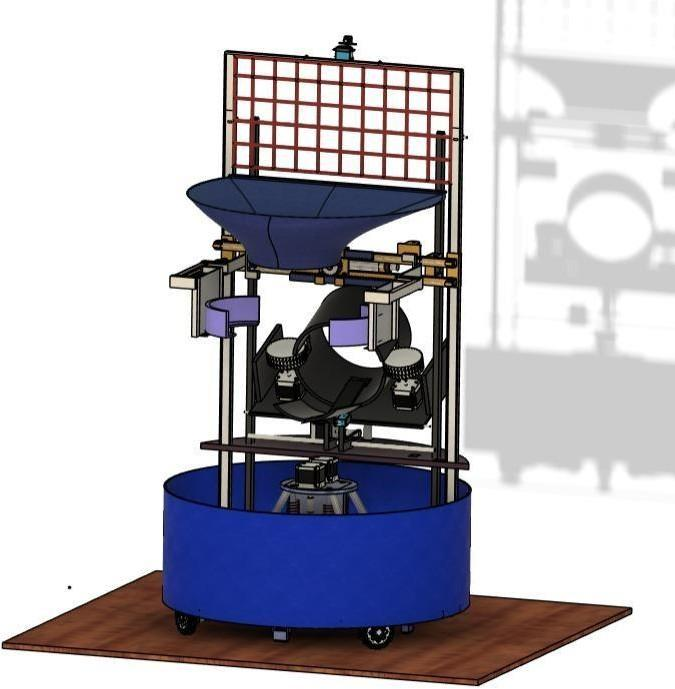
Fig. 7 — Full bot assembly (Fusion 360) — funnel-shaped ball receiver, dual side gripper, omni-wheel drive base.
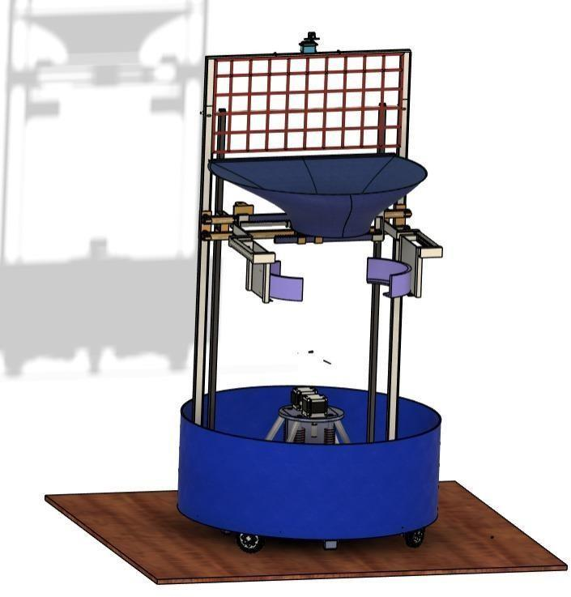
Fig. 8 — Same assembly, gripper retracted — net frame and rear support legs visible.
Drivetrain & chassis
The chassis is a circular frame built from T-slotted 4040 aluminium extrusion — bolted rather than welded, which kept the structure modular through several rounds of mid-competition redesign. Four omni-wheels in a 45° cross configuration give full holonomic control: the bot can translate in a straight line from a standstill with no preliminary rotation, and combine translation with rotation for fine orientation against the hoop. Motor selection followed directly from the numbers: at an estimated 40 kg robot weight and 0.65–0.75 traction coefficient on a plyboard surface, the four-wheel configuration generates a resultant torque of roughly 2.81–2.83× single-motor torque — which sized the drive motor to an HD planetary DC unit rated 468 rpm, 24 V, 72.6 N·cm.
Gripping & ball handling
A front-mounted fabric basket — chosen specifically to absorb the ball's momentum and prevent bounce-out — receives the ball and positions it between a two-part pneumatic gripper. The gripper rides a motor-driven belt for vertical travel, so the same mechanism that closes around the ball can also lift it into position for dribbling or hand-off to the shooting subsystem. Actuation logic is governed by a 5/3-way solenoid valve: with solenoids A and B independently switched, the system can extend, retract, or hold position against external force when both are off — which matters for dribbling, where the gripper needs to resist disturbance between beats without continuous power draw.
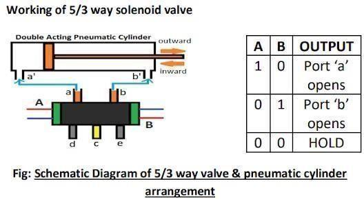
Fig. 9 — 5/3-way solenoid valve schematic governing the pneumatic gripper and cylinder actuation.
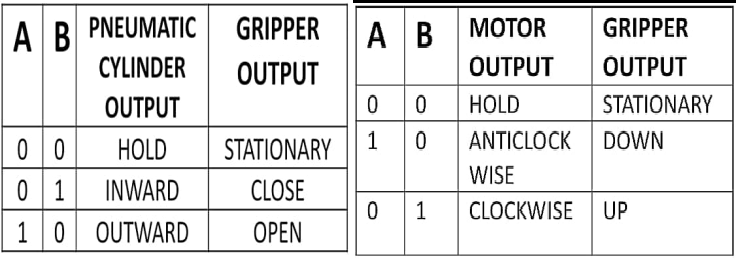
Fig. 10 — Logic tables: pneumatic cylinder output → gripper state (left); motor direction → vertical travel (right).
Shooting & passing
The shooting mechanism is a hollow cylindrical housing, sized to the ball's diameter, with two motor-driven discs mounted transversely inside. The gripper deposits the ball onto a conveyor belt feeding this housing; as the ball rolls through, the discs impart tangential force to launch it, while a pneumatic actuator under the whole assembly adjusts the projection angle. Shoot and pass are semi-automatic: on command, an image-processing pipeline — Gaussian blur, HSV color-space conversion, Canny edge detection — locates the hoop via Hough-circle and color masking, estimates range from a LiDAR depth map, and computes launch angle from a physics-based trajectory model before the motors execute.
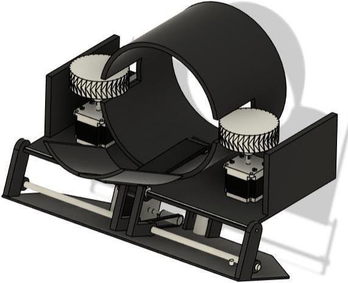
Fig. 11 — Shooting mechanism — dual transverse discs inside the launch cylinder, stepper-driven.
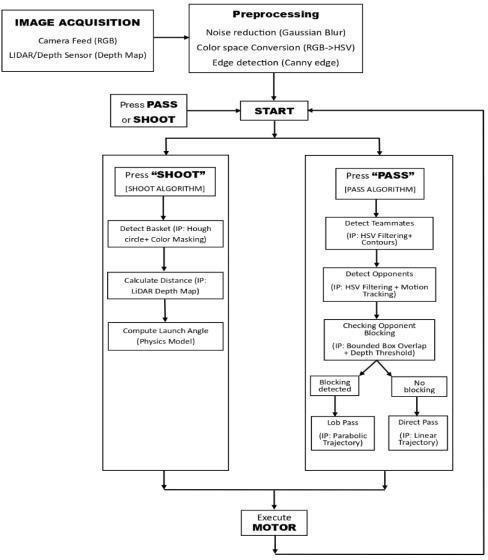
Fig. 12 — Shoot/pass decision logic — opponent-blocking detection branches into lob or direct trajectory.
| Distance (m) | Velocity (m/s) | Launch angle (°) |
|---|
| 1.0 | 10.00 | 52 |
| 5.0 | 13.62 | 31 |
| 10.0 | 16.51 | 30 |
| 15.0 | 20.13 | 28 |
| 20.0 | 23.02 | 26 |
| 29.0 | 30.00 | 22 |
Sample rows from the physics-model output sheet (29 computed rows total) mapping required launch velocity and angle against shot distance — the table the shoot algorithm references at runtime.
Jumping mechanism
Jumping while shooting was an explicit task requirement. The mechanism stores energy in a motor-compressed spring barrel, then releases it through a four-legged impact plate; on landing, the single-jointed legs fold to absorb shock before re-expanding to propel the bot upward again. It's a fully mechanical energy-storage solution rather than a higher-power-draw alternative — a deliberate trade given the bot's already-distributed 24V power budget across six motor groups.
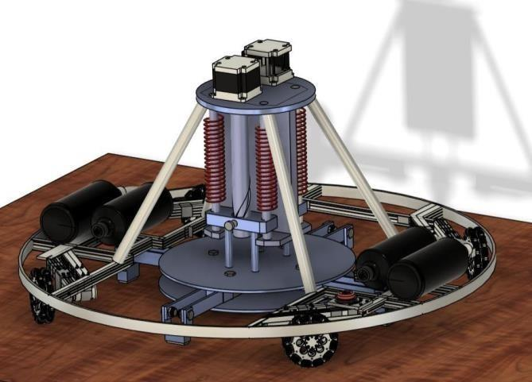
Fig. 13 — Spring-barrel jump mechanism, compressed state — twin motors drive the compression shaft.
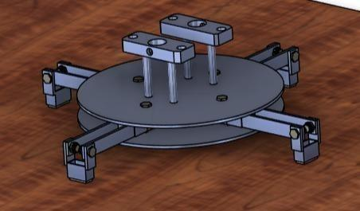
Fig. 14 — Four-legged impact plate, rubber-bushed feet for shock absorption on landing.
Control architecture & power
Sensor input (camera, proximity, pressure, encoders, IMU) feeds a decision-making layer — path planning, jump decision, ball localization, task selection — which drives the actuation layer across five independently controlled subsystems. Power is distributed from a single 24V battery through dedicated DC-DC converters and per-subsystem motor drivers, with an emergency stop wired to cut power directly rather than through software, which was a deliberate safety-first call given the pneumatic and high-torque jump subsystems involved.
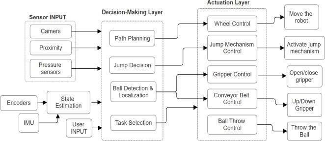
Fig. 15 — Sensor input → decision layer → actuation layer control architecture.
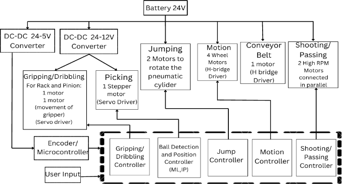
Fig. 16 — 24V power distribution across jump, motion, gripping, conveyor, and shooting subsystems.
97/100 in Stage 1 of DD Robocon 2025 — the highest score recorded among all participating IITs and NITs. Bot dimensions: 1480 mm × 80 mm (extending to 2000 mm × 120 mm); estimated weight 40 kg.
03
Pedal-Powered Manual Washing Machine — AAKRUTI 2024
Team: Robocell, NIT Durgapur
Theme: AAKRUTI 2024 — Sustainable Design
Status: Preliminary concept design (CAD & mechanism only)
Tools: SolidWorks
In India, an estimated 5 million people — disproportionately women — earn their livelihood through manual laundry work, and many more do it unpaid as daily domestic labour. Powered washing machines exist, but the cost and electricity dependence put them out of reach for exactly the households that would benefit most. For AAKRUTI 2024's sustainability theme, I worked on a concept for a fully human-powered washing machine that removes electricity from the equation entirely, while still mechanizing the punishing part of the task — the agitation.
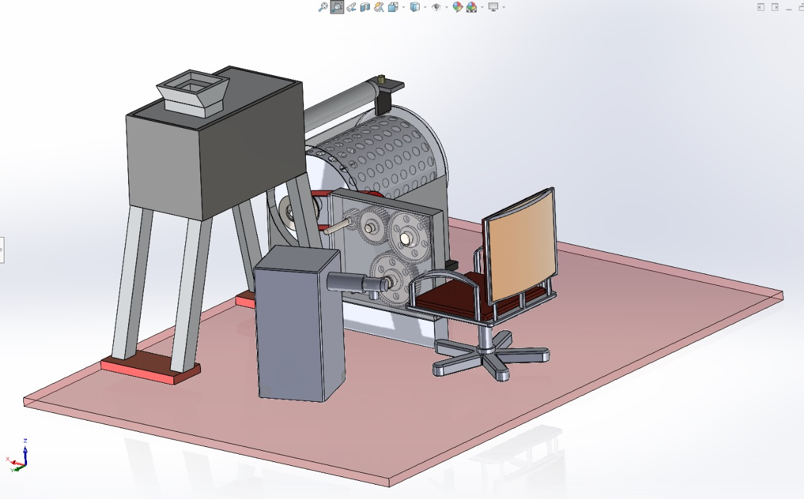
Fig. 17 — Full assembly (SolidWorks) — hopper-fed drum, gear train, and pedal-chair unit on a common base.
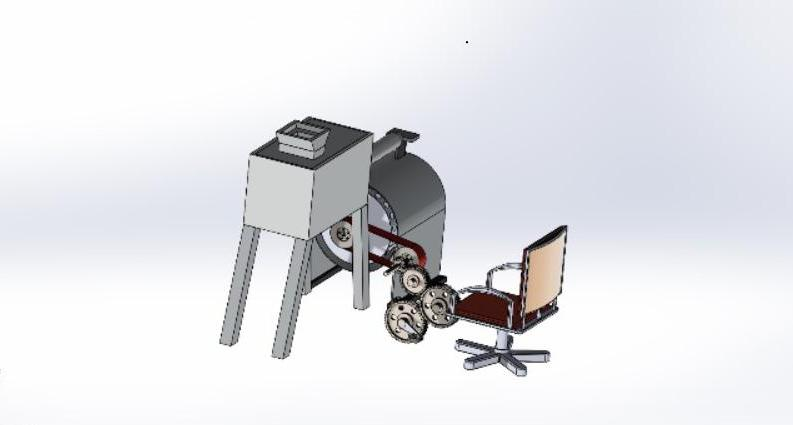
Fig. 18 — Alternate angle, showing the belt-and-gear transmission between the pedal crank and the drum shaft.
Concept
The design centers on a perforated rotating drum — loaded with clothes and water from an overhead storage tank — connected through a pulley-and-belt drive to a gear train, which is in turn driven by a pedal mechanism. The user sits on an adjustable, ergonomic chair (visible front-right in the assembly) and pedals; that rotational input is stepped through the gear train and transmitted via belt to rotate the drum, agitating the clothes inside exactly as a powered drum washer would, but with human effort replacing the motor entirely.
The water tank feeds directly into the drum housing, so the same pedalling action that drives agitation also keeps the wash cycle self-contained — no separate fill-and-drain step requiring electricity or plumbing. The ergonomic, adjustable seating was a deliberate choice: the task this design targets is currently done standing or crouched for hours, so converting it to a seated, geared task is itself a meaningful reduction in physical strain, independent of any speed advantage.
This was developed and presented as a preliminary concept design — the gear ratios and shaft sizing visible in the model (the assembly tree references multiple spur gears and stepped shaft diameters) were sized by hand for a working proof-of-concept, but I don't have the full torque and load calculations from this stage on hand to present here. I'm noting that gap directly rather than overstating the design's current state: it demonstrates the mechanism and the reasoning behind it clearly, but it hasn't yet gone through the same structural validation pass as the ultrasound gripper project above.
Designed against a real constraint, not a hypothetical one: ~5 million people in India derive their livelihood from manual laundry work, with many more performing it as unpaid domestic labour — the target user for this design explicitly excludes anyone who could already afford a powered washing machine.
04
Mini CNC Plotter
Type: Independent build
Tools: Arduino, G-code, repurposed DVD-drive mechanisms
A low-cost CNC plotting machine built around repurposed DVD-drive linear mechanisms for the X/Y stages, controlled by an Arduino running G-code-interpreted motion commands. Demonstrated precise positioning via stepper-motor actuation for automated drawing — a small, self-directed project in the same vein as the larger work above: taking an underspecified mechanical problem (precise 2D motion control on a near-zero budget) and finding a working solution from first principles.